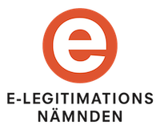

Draft Release for the Swedish eID Framework
March 28, 2018
Draft release of the Swedish eID Framework specifications. The major changes since the March 2017 release are:
- A new specification, ELN-0613 - Signature Activation Protocol, has been added. This document specifies a Signature Activation Protocol (SAP) and its data elements for implementation of Sole Control Assurance Level 2 (SCAL2) according the European standards prEN 419241 - Trustworthy Systems Supporting Server Signing - Part 1 and 2 (prEN 419 241-1 and prEN 419 241-2).
-
The
dateOfBirth-attribute is now a recommended attribute for the attribute set "Natural Personal Identity with Civic Registration Number". The reason for this is that this information is required for the eIDAS minimum data set. Also, the service entity categoryhttp://id.elegnamnden.se/ec/1.0/eidas-pnr-deliverywas updated to require this attribute. This service entity category is declared by Identity Providers delivering assertions for a foreign eIDAS-node (via the Swedish eIDAS Proxy Service). -
The Deployment profile now recommends usage
of the
<saml2p:RequesterID>element when requests are sent from signature services, or other actors that act as proxies. - The Deployment profile has been extended with information about how to request Signature Activation Data (according to ELN-0613 - Signature Activation Protocol).
-
A new service property entity category
http://id.elegnamnden.se/sprop/1.0/scal2was added. Identity Providers that support of SAD-generation should declare this category. -
The Authentication Context URI:s
http://id.elegnamnden.se/loa/1.0/eidas-nf-lowandhttp://id.elegnamnden.se/loa/1.0/eidas-nf-low-sigmwere added. They represent authentication with a notified eID scheme for eIDAS "low". - The Implementation Profile for using OASIS DSS in Central Signing Services specification was updated with a requirement to adapt authentication request procedures when the requested signature is a qualified electronic signature.
-
The Certificate profile for certificates issued by Central Signing services
specification was updated as follows:
- Removed the requirement to store "personnummer" or "samordningsnummer".
- Updated standards references to remove old deprecated standards and replace them with the currently published documents.
-
Specified optional support for using semantics identifiers in accordance with ETSI EN 319 412-1 to specify that the
serialNumberattribute contains a Swedish "personnummer" or "samordningsnummer", Provisional ID or eIDAS person identifier. - Added requirement to specify ETSI policy identifiers.
- Incorrect versions and references were corrected in the DSS Extension for Federated Central Signing Services specification.
- Section 5.3 of the Deployment profile was updated with specifications of how an Service Provider may request authenticating IdP when communicating with a Proxy IdP. This is also useful when sending requests to the eIDAS connector, where a required country may be given directly in the request.
Note: Each specification below contains a section, "Changes between versions", that lists the changes made to each specification.
For a complete, and even more detailed, list of changes you can view all changes made since the March 2017-release on GitHub using this link: https://github.com/elegnamnden/technical-framework/compare.
If you have comments on the draft specifications, please let us know by commenting on the drafts on "E-legitimationsnämndens Tekniska Forum" - https://forum.eidasweb.se.
Specifications:
- ELN-0600 - Tekniskt ramverk - Svensk e-legitimation | pdf - version 1.6 (draft) (in Swedish)
- ELN-0602 - Deployment Profile for the Swedish eID Framework | pdf - version 1.5 (draft)
- ELN-0603 - Registry for Identifiers | pdf - version 1.5 (draft)
- ELN-0604 - Attribute Specification for the Swedish eID Framework | pdf - version 1.5 (draft)
- ELN-0606 - Entity Categories for the Swedish eID Framework | pdf - version 1.6 (draft)
- ELN-0607 - Implementation Profile for using DSS in Central Signing Services | pdf - version 1.3 (draft)
- ELN-0608 - Certificate Profile for Central Signing Services | pdf - version 1.1 (draft)
- ELN-0609 - DSS Extension for Federated Signing Services | pdf - version 1.2
- ELN-0611 - eIDAS Constructed Attributes Specification for the Swedish eID Framework | pdf - version 1.0
- ELN-0612 - BankID Profile for the Swedish eID Framework | pdf - version 1.0
- ELN-0613 - Signature Activation Protocol | pdf - version 1.0 (draft)